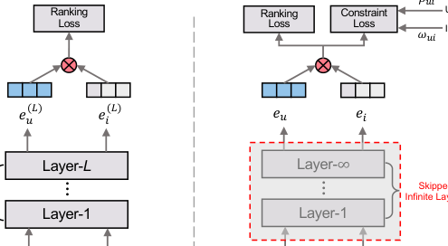

UltraGCN: Ultra Simplification of Graph Convolutional Networks for Recommendation (面向推荐的图卷积网络极致简化)
- 会议/期刊: CIKM 2021
- 作者与机构: Kelong Mao、Xi Xiao（清华/鹏城实验室）、Jieming Zhu、Biao Lu、Zhaowei Wang、Xiuqiang He（华为诺亚方舟实验室）
- 推荐链路定位: 召回（用户-物品二分图协同过滤表征学习）
- 研究方向: 图神经网络与知识图谱推荐 / 协同过滤与双塔召回
- 论文原文: https://arxiv.org/abs/2110.15114v2
- 开源代码: https://reczoo.github.io/UltraGCN
TL;DR (1分钟核心速览)
LightGCN 的瓶颈不在表达力而在训练效率：显式多层消息传递使 Amazon-Books 上需 780 个 epoch、11 小时才收敛。UltraGCN 抛弃显式传播，用约束损失直接拟合无穷层图卷积的闭式极限，并把物品-物品共现关系拆成独立的 Top-\(K\) 正样本增强项。在沿用 LightGCN 数据划分与 Full-Ranking 协议下，Amazon-Books 上 Recall@20 相对最强 GNN 基线 DGCF 提升 61.4%、NDCG@20 提升 71.6%，训练时间从 11h3m 降至 45m（约 14× 加速）。
Background & Motivation (背景与核心矛盾)
- 主流范式: 以 NGCF / LightGCN / DGCF 为代表的 GCN 协同过滤，通过堆叠 \(L\) 层邻域聚合获得高阶协同信号，再取各层嵌入加权和作最终表征。
- 前人局限: 作者对 LightGCN 的逐层传播公式作点积展开，发现三类硬伤：①边权不对称——物品 \(i\)与物品\(k\)分别被赋\(\frac{1}{d_i+1}\)与\(\frac{1}{\sqrt{d_k+1}}\)，同为用户\(u\)的邻居却待遇不同（用户-用户关系同理），缺乏协同过滤语义；②多类关系（\(u\)-\(i\)、\(i\)-\(i\)、\(u\)-\(u\)）被递归混在同一条传播链中，无法调节相对重要性，且引入大量低置信噪声边；③过度平滑使层数被锁死在 2–3 层，高阶信号实际取不到。
- 核心洞察 (Key Insight): 由于 \(\lim_{l\to\infty}(\hat{D}^{-\frac{1}{2}}\hat{A}\hat{D}^{-\frac{1}{2}})^l_{i,j}=\frac{\sqrt{(d_i+1)(d_j+1)}}{2m+n}\) 存在，无穷层传播必然收敛到一个可解析的不动点——既然如此，就没必要真的去"传"。
- 本文切入点: 把"传播到收敛"改写为"用损失函数约束嵌入满足不动点方程"，用一次前向的嵌入直接训练，彻底跳过传播。
Method (核心方法设计)
1. 整体框架 (Overall Architecture)
模型只保留用户/物品两组自由嵌入（与 MF 同参数规模）。用户-物品图部分：由不动点方程导出约束损失 \(\mathcal{L}_C\)，令相连的\((u,i)\)余弦相似度逼近结构系数\(\beta_{u,i}\)；物品-物品图部分：由\(G=A^\top A\)构建共现图，为每个正样本\((u,i)\)选出\(K\)个最相似物品\(j\in S(i)\)作加权正样本增强\(\mathcal{L}_I\)；主目标为 BCE 链接预测\(\mathcal{L}_O\)。三者同构为 BCE 形式，多任务一次反向传播即可，推理时仅做内积\(\hat{y}_{ui}=e_u^\top e_i\)。
flowchart TD
A["用户-物品交互矩阵 A"] --> B["不动点约束损失 L_C（系数 beta_ui）"]
A --> C["共现图 G = A^T A，Top-K 相似物品"]
C --> D["物品-物品约束损失 L_I（系数 omega_ij，增强正样本 (u,j)）"]
B --> E["统一 BCE 多任务目标 L = L_O + lambda L_C + gamma L_I"]
D --> E
E --> F["内积打分 y_ui = e_u^T e_i"]
2. 关键设计拆解 (Key Designs)
- 不动点约束损失 \(\mathcal{L}_C\)（替代全部用户-物品传播层）：痛点是不动点方程\(e_u=\sum_{i\in\mathcal{N}(u)}\beta_{u,i}e_i\)无法直接闭式求解。作者改为单位向量化后最大化两侧余弦，并套 sigmoid + 负对数似然，得到\(\beta_{u,i}=\frac{1}{d_u}\sqrt{\frac{d_u+1}{d_i+1}}\)、\(\mathcal{L}_C=-\sum_{(u,i)\in N^+}\beta_{u,i}\log\sigma(e_u^\top e_i)-\sum_{(u,j)\in N^-}\beta_{u,j}\log\sigma(-e_u^\top e_j)\)。直觉：\(\beta\)与\(d_u,d_i\)近似反比，即"高频用户/热门物品的单条交互影响应被削弱"，这正是协同过滤想要的软去噪；而负采样项（\(R=300\)）在损失层面替代了"层数上限"来抑制过度平滑。
- 物品-物品关系的解耦与硬筛选 \(\mathcal{L}_I\)：共现图\(G\)远比交互矩阵稠密，全量学习会灌入噪声。作者先算\(\omega_{i,j}=\frac{G_{i,j}}{g_i-G_{i,i}}\sqrt{\frac{g_i}{g_j}}\)度量相似度，只保留每个物品的 Top-\(K\)（\(K=10\)）邻居，并且不直接优化\(e_i^\top e_j\)，而是把\((u,i)\)的正样本扩展为\((u,j)\)，即\(\mathcal{L}_I=-\sum_{(u,i)\in N^+}\sum_{j\in S(i)}\omega_{i,j}\log\sigma(e_u^\top e_j)\)。这样三项损失形式完全统一，训练更稳、收敛更快；实验也证明该"增强式"写法优于直接\(i\)-\(i\)对比的\(\mathcal{L}'_I\)。
- 训练目标、负采样与推理效率：\(\mathcal{L}=\mathcal{L}_O+\lambda\mathcal{L}_C+\gamma\mathcal{L}_I\)，负样本为 Uniform 随机采样（比例 300），\(d=64\)、\(\lambda\approx1.0\)、\(\gamma\approx2.5\)。时间复杂度\(\mathcal{O}((K+R+1)|A^+|(d^2+1))\)，与 MF 同阶；\(\beta\)、\(\omega\) 均可离线预计算，推理只需一次内积召回。
Experimental Setup & Evaluation Protocol (实验设置与评估协议)
- 数据集与预处理: 沿用 GCN-CF 通用版本（已按交互阈值过滤的公开划分），统计如下：
| 数据集 | #Users | #Items | #Interactions | 密度 | 特征/场景说明 |
|---|---|---|---|---|---|
| Amazon-Book | 52,643 | 91,599 | 2,984,108 | 0.062% | 极稀疏电商图书，长尾最重 |
| Yelp2018 | 31,668 | 38,048 | 1,561,406 | 0.130% | 本地生活商户 |
| Gowalla | 29,858 | 40,981 | 1,027,370 | 0.084% | LBS 签到 |
| MovieLens-1M | 6,022 | 3,043 | 995,154 | 5.431% | 稠密电影评分 |
- 数据划分与防穿越 (Splitting Strategy): 严格对齐 LightGCN 系列的 per-user 随机 8:1:1 比例划分（训练/验证/测试），非全局时间戳切分。
- 排名评测协议 (Ranking Protocol): Full-Ranking——把所有未交互物品作为候选，对全体用户取平均，不做负采样排序，因此指标绝对值低于采样协议但可比性强。
- 对比基线与超参设置: 覆盖 MF-BPR、ENMF、CML、DeepWalk/LINE/Node2Vec、NGCF、NIA-GCN、LR-GCCF、LightGCN、DGCF；\(d=64\)、batch 1024、\(K=10\)、\(R=300\)、学习率\(10^{-4}\)、\(L_2=10^{-4}\)；改进经显著性检验\(p<0.05\)（多数\(p<10^{-4}\)）。
Key Experimental Results (实验关键数据)
1. 主实验对比 (Main Results)
| 模型 | Amazon-Book R@20 | Amazon N@20 | Yelp R@20 | Yelp N@20 | Gowalla F1@20 | Gowalla N@20 | ML-1M R@20 | ML-1M N@20 |
|---|---|---|---|---|---|---|---|---|
| MF-BPR | 0.0338 | 0.0261 | 0.0549 | 0.0445 | 0.1616 | 0.1366 | 0.2153 | 0.2175 |
| ENMF | 0.0359 | 0.0281 | 0.0624 | 0.0515 | 0.1523 | 0.1315 | 0.2315 | 0.2069 |
| NGCF | 0.0344 | 0.0263 | 0.0579 | 0.0477 | 0.1570 | 0.1327 | 0.2513 | 0.2511 |
| LightGCN | 0.0411 | 0.0315 | 0.0649 | 0.0530 | 0.1830 | 0.1554 | 0.2576 | 0.2427 |
| DGCF | 0.0422 | 0.0324 | 0.0654 | 0.0534 | 0.1842 | 0.1561 | 0.2640 | 0.2504 |
| UltraGCN_Base | 0.0504 | 0.0393 | 0.0667 | 0.0552 | 0.1845 | 0.1566 | 0.2671 | 0.2539 |
| UltraGCN | 0.0681 | 0.0556 | 0.0683 | 0.0561 | 0.1862 | 0.1580 | 0.2787 | 0.2642 |
| Improv. | +61.37% | +71.60% | +4.43% | +5.06% | +1.09% | +1.22% | +5.57% | +5.51% |
训练效率（Amazon-Book，同一 RTX 2080 环境）：UltraGCN 每 epoch 36s、75 轮收敛、总计 45m；LightGCN 51s、780 轮、11h3m；LR-GCCF 3h5m；ENMF 2h54m；MF-BPR 仅 12m 但精度最低。若统一只训 75 轮，LightGCN 仅 0.0342/0.0262，差距进一步拉大。
2. 消融实验 (Ablation Study)
| 变体 (Amazon-Book) | Recall@20 | NDCG@20 | 说明 |
|---|---|---|---|
| \(\lambda=0,\gamma=0\)（退化为 MF+BCE） | ≈0.036 | ≈0.028 | 完全丢弃图信息 |
| \(\lambda=0\)（去掉\(\mathcal{L}_C\)） | 0.0472 | 0.0364 | 仅剩物品侧约束 |
| \(\gamma=0\)（UltraGCN_Base，去掉\(\mathcal{L}_I\)） | 0.0504 | 0.0393 | 仅剩用户-物品约束 |
| UltraGCN（完整） | 0.0681 | 0.0556 | \(\mathcal{L}_O+\lambda\mathcal{L}_C+\gamma\mathcal{L}_I\) |
| UltraGCN + \(\mathcal{L}_U\)（用户-用户图） | 0.0683 | 0.0559 | 几乎无增益，故不采用 |
| \(\mathcal{L}'_I\)替代\(\mathcal{L}_I\)（直接\(i\)-\(i\) 对比） | 明显更低（图 3） | 明显更低 | 统一 BCE 形式更优 |
3. 关键实验发现 (Key Findings)
- 增益与稀疏度强正相关：Amazon-Book（密度 0.062%）上 Recall@20 从 DGCF 的 0.0422 跃至 0.0681（+61.4%），而稠密的 ML-1M 仅 +5.6%、Gowalla 仅 +1.1%——说明"无穷层极限约束 + 软边权"主要在极端稀疏、高阶信号难以通过 2–3 层传播触达的场景兑现价值。
- 效率不是靠牺牲精度换的：UltraGCN 45 分钟即达 0.0681，而 LightGCN 在同等 75 轮时仅 0.0342、跑满 780 轮（11 倍时间）也只有 0.0411，即精度与速度同时占优，根因是每 epoch 成本被压到 MF 量级且收敛轮数少一个数量级。
- 两类关系的贡献可加且量级不同：去掉 \(\mathcal{L}_C\)掉至 0.0472（−30.7%），去掉\(\mathcal{L}_I\)掉至 0.0504（−26.0%），叠加后 0.0681，验证"解耦后分别建模"优于混在传播链中；而\(\mathcal{L}_U\) 只带来 0.0002 的噪声级波动，佐证用户兴趣比物品属性更难从共现结构刻画。
Highlights & Limitations (亮点、对比与审稿批判)
- 与代表作对比 (vs. Prior Work): 相对 LightGCN（去掉特征变换/非线性但仍需 \(L\)层显式传播），本文连传播本身也去掉，把"层数"换成"损失权重 + 负采样"两个连续可控旋钮；相对 DGCF（意图解耦但架构更重），UltraGCN 参数规模等同 MF 却精度更高；相对 DeepWalk/LINE/Node2Vec 这类可归入 MF 框架的网嵌入方法，差别在于边权\(\beta,\omega\) 有明确协同过滤语义且经硬筛选去噪，因而在 Gowalla 等数据集上领先明显。
- 可迁移亮点: ①"把迭代算子写成不动点方程 → 转成约束损失"这一范式可迁移到任意多层传播模型（如社交扩散、KG 多跳推理）的加速；②用 \(\beta\propto 1/\sqrt{d_ud_i}\) 式的度反比权重做软去噪，比阈值过滤更平滑；③将关系图学习统一成 BCE 正样本增强，避免多目标量纲冲突。
- 审稿级局限批判: ①理论推导依赖"嵌入单位化 + sigmoid-NLL 替代余弦最大化"，与真实不动点仅近似等价，缺少收敛性误差界；②Gowalla/Yelp 增益仅 1%–5%，接近显著性边缘，且缺少大规模工业在线 A/B 与冷启动物品分桶评估；③\(\gamma\)在 2.5 附近最优、对稀疏度敏感，且\(G=A^\top A\)的共现图预计算与 Top-\(K\) 检索在千万级物品库上的开销未讨论，工程可扩展性论证不足。
Rating (四维评分)
- 方法创新性 (Novelty): ⭐⭐⭐⭐ （把无穷层消息传递的解析极限转写为可训练约束损失，并用负采样替代层数上限对抗过平滑，思路干净且有谱分析依据）
- 评估协议与实验扎实度 (Protocol & Experiments): ⭐⭐⭐⭐ （4 个数据集 + Full-Ranking + \(p\) 值检验 + 效率双视角对比齐备，但缺少分桶/冷启动与线上验证）
- 写作与数学规范度 (Clarity & Rigor): ⭐⭐⭐⭐ （从 LightGCN 点积展开逐项指出三类边权缺陷、再导出 \(\beta,\omega\)，推导链清晰；不动点近似的误差分析略欠）
- 工业落地与复现价值 (Industrial & Practical Value): ⭐⭐⭐⭐⭐ （代码开源、参数量等同 MF、训练 14× 加速且精度更高，是极易替换现有 GCN 召回层的工业级方案）